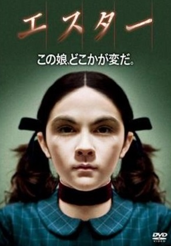
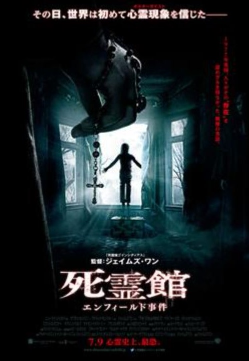
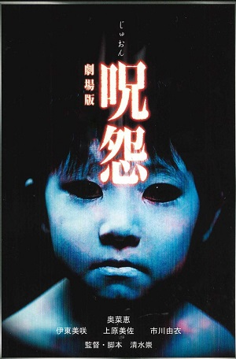

個人的オススメ映画！～ホラー～
このページは個人的にオススメの映画を紹介するページです

『エスター』（Orphan）は、アメリカ合衆国のホラー映画。監督はジャウム・コレット＝セラ、出演はヴェラ・ファーミガとイザベル・ファーマンなど。ある家族に養子として引き取られた美少女エスターが巻き起こす惨劇を描いている。
その2．死霊館 エンフィールド事件（死霊館シリーズ）

『死霊館 エンフィールド事件』（しりょうかん エンフィールドじけん、原題：The Conjuring 2）は、2016年制作のアメリカ合衆国のホラー映画で、死霊館シリーズに属する作品である。アメリカでは非常に有名な超常現象研究家のエドとロレインのウォーレン夫妻を主人公にした『死霊館』の続編で、今度は1977年にイギリス・ロンドンのエンフィールドで起こり、史上最長期間続いたポルターガイスト現象として知られる「エンフィールド事件」を題材としている。

『呪怨』（じゅおん）は、2000年に発売された清水崇監督・脚本によるホラーのビデオ作品。